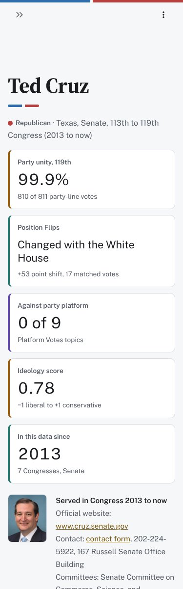
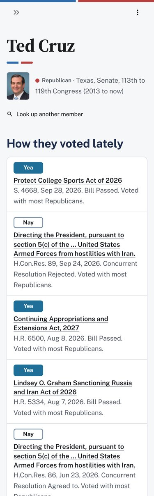

PartyCohesion: a public record that works on a phone
PartyCohesion shows how every member of Congress has voted since 2007. Most visitors arrive from a Facebook post, on a phone, with one question: how did my member vote? This is how I reworked the site around that question and measured every change.
Results
The problem
The data was right, but the site was built like a research tool. A member page opened on five stacked number cards and put the votes people came for thousands of pixels down. On a phone the page ran about 13,900 pixels.
Some flows also broke for real people. A ZIP code in a vacant district (TX-23) showed only the two senators, with no word on why. Going Back from a member lost your ZIP result. Some outlines and labels were too faint to meet WCAG.
I set the bar as WCAG 2.2 AA, 44px tap targets, pages that work at 320 pixels wide, and a design that never favors one party's color.
The method
I ran the same loop for every round of changes:
- Review. A design review scored the live site on Nielsen's 10 usability heuristics (0 to 4 each, 40 in all) and ranked findings by priority. I used an AI reviewer for this and treated its findings as leads to check, not as facts.
- Measure. A Playwright script loaded 8 pages at 320, 375 and 1,280 pixels wide, in light and dark, and checked each one for sideways scrolling, small tap targets, text and outline contrast, and phone form fields under 16 pixels. That is 48 page loads per change.
- Fix in small pieces. Each fix went in as its own pull request with tests, was measured again before merging, and was checked on the live site after it deployed.
- Say what wasn't checked. Every change notes what the measurements could not cover, such as real iPhone Safari and screen readers.
Before and after
The same member page, on a 375-pixel phone screen, a day apart.


What changed
- Votes first. Member pages lead with "How they voted lately": final votes on bills before nominations, short titles, and procedural votes left in the full record.
- Shorter on phones. Number cards sit two to a row, charts open on a tap, and long tables show their first rows. Cruz's page went from 13,909 to 10,017 pixels at 375 wide.
- ZIP lookup that tells the truth. A vacant seat gets its own row and a plain explanation, and the ZIP stays in the address so Back returns to your members.
- Accessibility. Control outlines went from 1.3:1 to 3.2:1 contrast. Charts are announced to screen readers by their titles. Tap targets are 44 pixels and phone form fields 16 pixels. The automated checker reports no failures on phone pages.
- A written design system. Colors, type sizes and corners live in a DESIGN.md file. A design linter's findings dropped from 60 to 2, both deliberate.
- Numbers that agree. The Home page and the Position Flips page now report the same shares, and a delegate's missed votes match everywhere they appear.
Review scores over nine rounds
| Round | Score | Bar |
|---|---|---|
| 1 | 25 | |
| 2 | 25 | |
| 3 | 26 | |
| 4 | 26 | |
| 5 | 27 | |
| 6 | 28 | |
| 7 | 28 | |
| 8 | 29 | |
| 9 | 29 |
When the score held at 29 for two rounds, I stopped scoring and switched to fixing the specific findings that were left. A flat score was the signal that more review rounds had stopped paying off.
What I'd keep doing
- Measure the live site, not just the code. One bug only showed on phones: a ZIP code from a link filtered the list while the box looked empty. Tests passed; a phone-width browser caught it.
- Write down what wasn't checked. It keeps a "done" honest, and it makes the next task obvious. Here that is a pass with a real screen reader and real iPhone Safari.